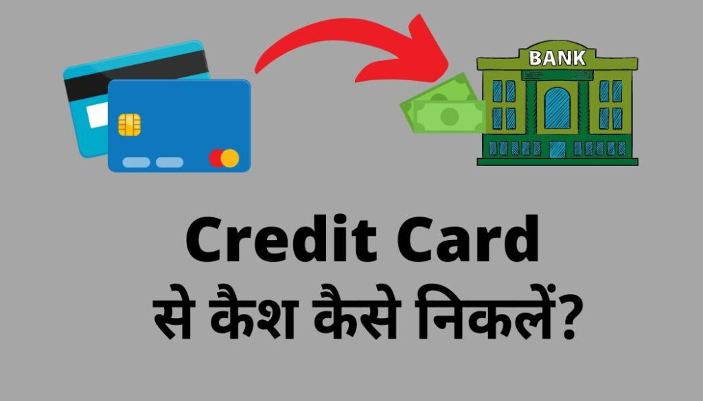

अगर आपको नहीं पता की Credit Card Se Cash Kaise Nikalte है तो आप बिल्कुल सही जगह पर आए हैं ,आज हम आपको कुछ ऐसे Method बताने वाले हैं जिसकी मदद से आप अपने Credit Card के Balance को अपने Bank Account में Transfer करके किसी भी काम के लिए Balance को आप Use कर सकते हैं या आप चाहें तो Credit Card के Balance को ATM से भी निकाल सकते हैं।
दोस्तों आइए जानते हैं कि Credit Card से Cash निकालने में परेशानी क्यों होती है:-
जैसा कि आपको पता है की Credit Card का Balance होता है वह हमारे Bank Account का Balance नहीं होता है,और बैंक हमें Credit Card मुख्य रूप से ऑनलाइन शॉपिंग, Recharge, टिकट बुकिंग इस तरह के ऑनलाइन Transaction के लिए देती है।
लेकिन कई बार हमें कोई खरीदारी नहीं करनी होती है लेकिन Cash की आवश्यकता होती है इस केस में हम Credit Card के Balance को कुछ जुगाड़ लगाकर अपने Bank Account में Transfer कर लेते हैं और जब एक बार Balance हमारे Bank Account में क्रेडिट हो जाता है तो उस Balance को कहीं भी use कर सकते हैं।
Credit Card से पैसे निकालने पर कितना charge लगता है?
दोस्तों कई जगह जैसे अगर आप ATM या कुछ ऑनलाइन Recharge Wallet के माध्यम से अगर आप Credit Card का Balance बैंक में Transfer करते हैं तो आपको कुल राशि का 1% से लेकर 3% तक Transfer Charge देना होगा।
उदाहरण के लिए अगर आपको ₹100000 Transfer करने हैं और आपको 1% Transaction Charge लग रहा है तो आपके खाते में ₹99000 ही जमा होंगे ₹1000 Transaction Charge काट लिए जाएंगे और आपके Credit Card का बिल ₹100000 आएगा।
Credit Card Se Cash Nikalne ke कौन कौन से तरीक़े हैं(Method To With-drawl Money From Credit Card to Bank)
दोस्तों अगर आप Credit Card से कम रकम यानी 2000 4000 5000 रुपय तक निकालना चाहते हैं तो आप बिना किसी Transaction Charge के आसानी से अपने Credit Card से Cash निकाल सकते हैं लेकिन अगर आप ज्यादा Amount अपने Credit Card से निकालना चाहते हैं तो इसके लिए आपको कुछ Transaction Charge देना होगा।
कई ऑनलाइन प्लेटफार्म के Wallet का इस्तेमाल करके आप Credit Card का Balance अपने बैंक में Transfer करके Cash निकाल सकते हैं।
बिना किसी शुल्क के Credit Card से बैंक में पैसे कैसे ट्रान्स्फ़र करें (Transfer Money From Credit Card To Bank Account Without Any Charges)
दोस्तों अगर आप बिना किसी Charge के Credit Card से कैश निकालना चाहते हैं तो आप नीचे दिए गए मेथड में से कोई एक मेथड का Use करके बिना किसी शुल्क के अपने Credit Card se Cash निकाल सकते हैं।
{kind=link}

से कैश कैसे निकलें?
यह भी पढ़िए :-
- SBI Credit Card band kaise kare? ऐसे करे अपना credit कार्ड बंद
- Credit Card के फ़ायदे और नुक़सान।
- KISAN CREDIT CARD (KCC) आवेदन के नए नियम।
- KCC -किसान क्रेडिट कार्ड के लिए आवेदन कैसे करें?
Method-1:Credit card से पैसे Paytm wallet में ट्रान्सफर करके बैंक में ट्रान्सफर करें:-
दोस्तों आइए जानते हैं कि Paytm Wallet की मदद से हैं आप किस तरह से अपने Credit Card का Balance अपने Bank Account में Transfer करके कैश निकाल सकते हैं इसके लिए आपको नीचे दिए गए स्टेप्स को फॉलो करना है:-
- सबसे पहले आपको अपने मोबाइल में Paytm Wallet इंस्टॉल करना है, और Paytm का अकाउंट बनाकर लॉगिन कर लेना है।
- इसके बाद Paytm Wallet में जाना है और Wallet में Balance Add करना है।
- आप जितना कैसे निकालना चाहते हैं उतना Amount आपको अपने Wallet में Add करना है और ऐड करते समय Payment Method में आपको अपना Credit Card उपयोग करना है।
- जब आप अपने Credit Card के मदद से वार्ड में Balance Add कर लेंगे तब आप इस Balance को अपने Bank Account में Transfer कर सकते हैं या अपने दोस्त के Paytm में Transfer करके उसके खाते में पैसे जमा करा कर अपने खाते में Transfer करवा सकते हैं।
Method-2:किसी पेट्रोल पम्प पर अपना Credit Card Swipe करके पैसे ले सकते है
अगर आप बिना कमीशन के ही अपने Credit Card से कैश निकालना चाहते हैं तो इसके लिए आप अपने जान पहचान के किसी नजदीकी पेट्रोल पंप पर भी जा सकते हैं, आइए बताते हैं इसके लिए आपको क्या करना होगा।
- आप अपने नजदीकी किसी पेट्रोल पंप पर चले जाइए, वहां पर आपको तेल भरवाने की आवश्यकता नहीं है।
- पेट्रोल पंप पर जो स्टाफ होते हैं उन्हें कहिए कि हमें अपने Credit Card को स्वाइप करना है और उसके बदले मुझे cash चाहिए।
- आपको जितने भी Amount की आवश्यकता हो आप उतना Amount अपने Credit Card से पेट्रोल पंप के कार्ड स्वाइप मशीन पर स्वाइप करके कटवाले।
- अब आपको तेल के बदले कैश पेट्रोल पंप के स्टाफ से ले लेना है यह भी एक तरीका है Credit Card से Cash निकालने का।
Method-3: Online Shopping के माध्यम से Credit Card से पैसे निकल सकते हैं
दोस्तों आप ऑनलाइन शॉपिंग के माध्यम से भी Credit Card से कैश निकाल सकते हैं लेकिन दोस्तों यह प्रोसेस थोड़ा सा पेचीदा है, आपको सबसे पहले अपने दोस्तों रिश्तेदारों से बात करना है और उनसे पूछना है कि क्या वह ऑनलाइन शॉपिंग के माध्यम से कोई चीज खरीदना चाहते हैं।
अगर आपका कोई रिश्तेदार या दोस्त ऑनलाइन शॉपिंग करना चाहता है तो उनके सामान का जो पैसा लगेगा वह आप अपने Credit Card से पेमेंट कर सकते हैं, और उसके बदले अपने दोस्त से वह पैसा अपने खाते में मंगा सकते हैं इस तरह से आपको बिना Charge दिए Credit Card से कैश आपके अकाउंट में आ जाएगा।
Online shopping site:–Amazon
Method-4: CRED App की मदद से आप पैसे Transfer कर सकते हैं ।
दोस्तों CRED App की मदद से आप आसानी से अपने Credit Card का पैसा Bank Account में Transfer कर सकते हैं इसके लिए आपको सबसे पहले अपने मोबाइल में CRED App इंस्टॉल करके नया अकाउंट बना लेना है और उसके बाद लॉगिन कर लेना है ।
इस ऐप में Theree डॉट पर क्लिक करने के बाद आपको एक Money Transfer To Account का ऑप्शन मिलेगा जिसकी मदद से आप आसानी से अपने Credit Card के बैलेन्स को अपने किसी भी Bank Account में Transfer कर सकते हैं।
दोस्तों याद रहे की जब आप इस ऐप की मदद से बहुत ज्यादा पैसे का Transaction करेंगे तो इसमें कभी-कभी Transaction Charge भी देना पड़ सकता है।
Method-5:Money Gram के Help से आप Credit Card से Cash निकल सकते हैं ।
दोस्तों मनीग्राम एक ऑनलाइन पोर्टल है जिसकी मदद से देश विदेश में लोग एक जगह से दूसरी जगह, एक खाते से दूसरे खाते में पैसे Transfer करते हैं, अगर आप अपने खाते में Credit Card से पैसा Transfer करना चाहते हैं तो इसके लिए आपको किसी नजदीकी मनीग्राम हेल्प सेंटर पर चले जाना है।
इसके बाद वहां पर कार्ड स्वाइप मशीन में अपने Credit Card को स्वाइप करके जितने पैसे आपको अपने खाते में Transfer करने हैं उतना पैसा कटवा लेना है।
उसके बाद उस पैसे को अपने किसी Bank Account में Transfer करवा लेना है। इस तरीके से आप Credit Card से कैश निकाल पाएंगे।
Method-6:Freecharge Wallet की मदद से Credit Card से पैसे निकल सकते हैं ।
दोस्तों आप Paytm की तरह ही FreeCharge Wallet से भी Credit Card Se Cash निकाल सकते हैं, इसके लिए आपके मोबाइल में Freecharge Wallet Install होना चाहिए और Freecharge Wallet का Active अकाउंट होना चाहिए। इसके बाद आप नीचे के स्टेप को फ़ॉलो करके Credit Card Se Cash निकाल सकते हैं।
- सबसे पहले आपको अपना FreeCharge का Wallet ओपन कर देना है।
- उसके बाद अपने Wallet सेक्शन में चले जाना है और उसमें ऐड मनी पर क्लिक करना है।
- आपको जितने पैसे Credit Card Se Cash कराने हैं कितना Amount आपको अपने Wallet में डालना है।
- अब आपको Wallet Balance ऐड करने के लिए Credit Card Se पेमेंट कर देना है, इस तरह से आपके Credit Card का बैलेन्स आपके freecharge Wallet में आ जाएगा।
- इस पैसे को आप जब चाहे तब अपने Bank Account में Transfer कर सकते हैं और उस पैसे को ATM या बैंक जाकर Withdrawl कर सकते हैं।
Credit Card से ATM से पैसे कैसे निकाले ?
दोस्तों Credit Card से ATM में पैसा निकालने का Same वही प्रोसेस है जो प्रोसेस आप डेबिट कार्ड से करते हैं यानी कि जिस तरह से आप डेबिट कार्ड से ATM में जाकर पैसा निकालते हैं उसी तरह से आप Credit Card से भी ATM में जाकर पैसा निकाल सकते हैं।
Credit Card से ATM में पैसा निकालने से पहले आपको यह सुनिश्चित कर लेना है कि आपके Credit Card में ATM Transaction एक्टिवेट है या नहीं दूसरा आपके Credit Card का Balance कितना है।
अगर आपका Credit Card ATM से पैसे निकालने के लिए एक्टिव नहीं है तो आप अपने Internet Banking ,Mobile Banking में लॉगिन करके अपने Credit Card का ATM Transaction चालू कर सकते हैं।
Consclusion(निष्कर्ष):-
कुल मिलाकर आज हमने जाना की अगर आपके खाते में पैसे नहीं है और आपके पास Credit Card है तो आप अपने Credit Card के Balance को Use करके अपने पैसे की कमी को पूरी कर सकते हैं, साथ ही साथ हमने यह भी जाना कि किस तरह से बिना किसी Transaction Charge के फ्री में Credit Card Se Cash निकाल सकते हैं।
Frequently Ask Question with Answers:-
Credit Card का Balance कैसे चेक करे?
Credit Card का Balance चेक करने के लिए आपको अपना Internet Banking या Mobile Banking में लॉगिन करके अपने कार्ड सेक्शन में जाकर Credit Card को सिलेक्ट करके अपने Credit Card का बकाया और Balance देख सकते हैं।।
Credit Card से ऑनलाइन प्रोडक्ट कैसे खरीदें?
Credit Card से ऑनलाइन प्रोडक्ट खरीदने के लिए आप किसी भी ऑनलाइन शॉपिंग साइट जैसे अमेजॉन, फ्लिपकार्ट आदि पर जाकर अपना पेमेंट Credit Card से करके शॉपिंग कर सकते हैं।
Ek Credit Card Se Dusre Credit Card Ki Payment Kaise Kare?
एक Credit Card से दूसरे Credit Card का बिल पेमेंट करने के लिए आपको किसी भी बिल पेमेंट करने वाले Wallet में अपना अकाउंट बनाना है और वहां Credit Card बिल को सेलेक्ट करना है जिस कार्ड का आपको बिल पेमेंट करना है उस कार्ड का नंबर डालकर उसका Bill payment दूसरे Credit Card से कर सकते हैं।
Credit Card कैश लिमिट क्या है ?
दोस्तों हर बैंक Credit Card देते समय कार्ड में यह लिमिट सेट कर देता है कि आप अधिक से अधिक कितने हैं कैसे का Transaction एक निश्चित समय में कार्ड के माध्यम से कर सकते हैं इसे Credit Card कैश लिमिट कहा जाता है।
Credit Card से पैसे कैसे Transfer करें?
Credit Card से पैसा Transfer करने के लिए आप Paytm, FreeCharge, मनीग्राम,CRED इस तरह के एप्लीकेशन का मदद लेकर आसानी से कर सकते हैं।
Credit Card के लिए सैलरी कितनी होनी चाहिए?
दोस्तों Credit Card के लिए कितनी सैलरी होनी चाहिए यह जरूरी नहीं है जरूरी है की Credit Card Use करने वाला व्यक्ति एक सैलेरी पर्सन हो जितनी उसकी सैलरी होगी उसी तरह से कैश लिमिट उनको मिलेगा।
Credit Card कैसे बनता है?
सभी बैंक अपने ग्राहकों को Credit Card देती है, इसके लिए आपको अपने बैंक शाखा में जाकर Credit Card के लिए आवेदन करना होगा और अगर आप Credit Card लेने के योग्य होंगे तो आपको बैंक Credit Card दे देगी।